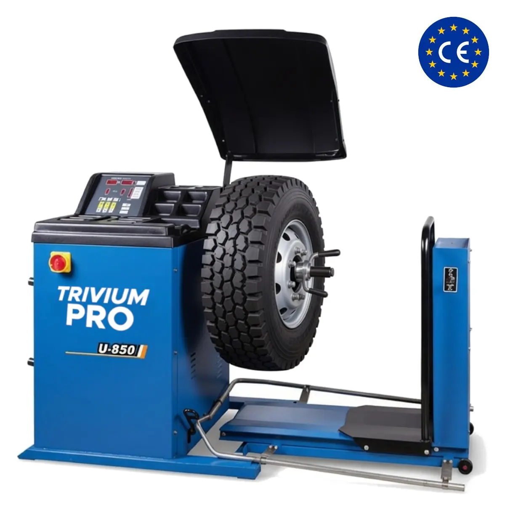

Balanceadora de Ruedas para Camión U-850 150 kg Trivium Pro
Capacidad profesional 150 kg con plataforma neumática elevadora: monta y balancea neumáticos pesados de camión y bus sin esfuerzo, ideal para talleres de alto volumen y flotas en Argentina. · Precisión ±5 g y pedal de freno preciso : localiza el desbalance exacto en segundos, reduce vibraciones, prolonga la vida de los neumáticos y mejora la seguridad en ruta para vehículos pesados. · Hasta 24" de diámetro + kit deluxe incluido : arranque/frenado ultrarrápido a 200 rpm, 4 modos de balanceo y Quick-Chuck para sujeción segura – la equilibradora real para camiones, no una adaptación genérica.
- Capacidad
- 150 kg
- Altura de elevación
- —
- SKU
- P-5406
- Capacidad profesional 150 kg con plataforma neumática elevadora: monta y balancea neumáticos pesados de camión y bus sin esfuerzo, ideal para talleres de alto volumen y flotas en Argentina.
- Precisión ±5 g y pedal de freno preciso : localiza el desbalance exacto en segundos, reduce vibraciones, prolonga la vida de los neumáticos y mejora la seguridad en ruta para vehículos pesados.
- Hasta 24" de diámetro + kit deluxe incluido : arranque/frenado ultrarrápido a 200 rpm, 4 modos de balanceo y Quick-Chuck para sujeción segura – la equilibradora real para camiones, no una adaptación genérica.